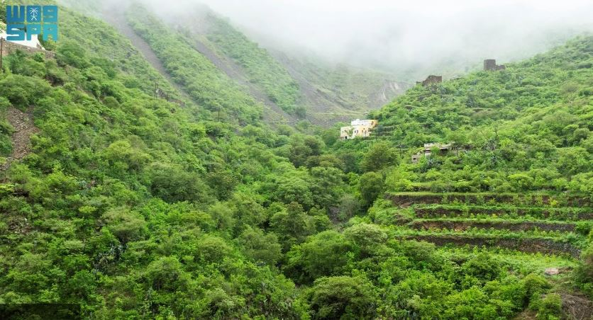
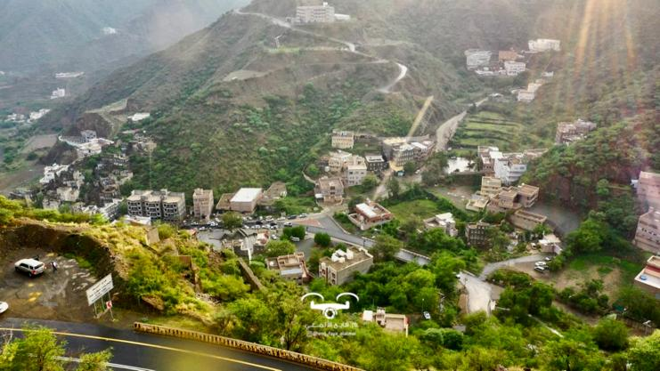

Click to see photos



Rijal Almaa is a famous heritage site in Saudi Arabia. It has many colorful stone buildings and a long history. The place shows old architecture and culture from the south of Saudi Arabia.

Rijal Almaa is in Asir region, southwest of Saudi Arabia. It is about 45 km west of Abha. The area has mountains and green nature.
Rijal Almaa is very old. It was an important trading center in the past. Merchants passed through it between Yemen, the Levant, and the Arabian Peninsula. The stone buildings are hundreds of years old. .
Rijal Almaa is important because it shows the culture of Asir. It is famous for its buildings and the heritage museum. The museum has old tools, clothes, and other traditional things
The best time to visit is winter or spring. The weather is nice and good for walking and taking photos.

